All games, grouped as the app groups them. What each game asks you to do, the skills involved, and what it measures.
Game categoryBrain twisters
| Game | What you do | Skills involved | What it measures |
|---|---|---|---|
| Aliens | You are the gate agent at an alien spaceport. Each gate shows its boarding pass, a rule about alien traits such as "3 EYES", "NOT BLUE" or "1 EYE AND NOT BLUE". Aliens wander into a gate's queue by themselves; you drag each one onto the boarding ramp if it matches that gate's pass, or back out into the hall if it does not. There are always at least two gates, and each gets its share of arrivals. An alien left waiting too long walks off, and a full queue turns new arrivals away; each costs a miss, and a level is passed only if every gate is handled well. After a while the passes come down, so you work from memory. From level 4 the passes swap between gates, some gates board everything except their pass, and one waiting alien at a time is called and must be dealt with before its countdown runs out. | Holding several rules at once and keeping straight which belongs to which gate (including opposite ones, since some gates accept and others refuse), while being pulled from gate to gate rather than working in your own order. |
|
| Sorting Robots | Quality control at a parcel depot. Two conveyor belts carry parcels down the screen, each belt with its own rule on a sign at its head, and every parcel carries two labels side by side. Each belt runs through a scanner in its middle, and as a parcel passes through you judge it by that belt's rule: tap the scanner to have the robot grab it if it matches, or let it ride if it doesn't. Parcels keep coming on both belts, often nearly together, and the belts speed up as you get better. Part way into each level the rule labels fade away and you have to keep both rules in your head, and on later levels the belts swap rules now and then. Which rules appear is drawn fresh each time you play. | Switching quickly between two rules depending on which belt a parcel is on, holding back when a parcel doesn't match, and keeping both rules in mind once the labels are gone. |
|
| Pockets 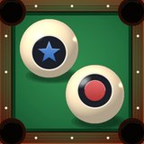 |
Two balls roll down a pool table, side by side. Three pockets wait at the near end: a corner pocket for each of two rules, and a middle pocket for balls matching neither. Send them to the right one before they reach the end. Each ball carries one object, and only one of the two can match a rule. The rules are shown for a few seconds at the start of a level, then hidden after a number of rounds. | Applying a rule fast enough under time pressure, and from memory once the labels are gone. |
|
| Change 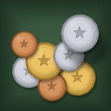 |
A target amount and a pile of overlapping coins, from a penny up to a dollar. Drag coins into the tray and press Pay. There is no running total, so you add it up yourself. Every board can be paid exactly. | Adding up in your head under time pressure, and whether you settle on a plan or keep revising it. |
|
| Tip the Scales 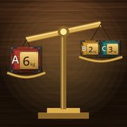 |
A weigh-house full of crates in colored sets, and no scale that reads numbers. The crates of one color weigh 1, 2, 3 kg and up, each weight once, and a pile of balance scales says how some of them compare: this one balances that one, these two together are lighter than that one, this one lies between two others. Tap a crate and rub weights off its slate until one is left. Every puzzle can be solved by reasoning alone, and a hint shows one step and why. A level is three short puzzles, larger and with weaker clues as you go. | Step-by-step logical deduction, holding several facts in mind at once, and checking a conclusion before acting on it. |
|
Game categoryAttention & Speed
| Game | What you do | Skills involved | What it measures |
|---|---|---|---|
| Gorilla 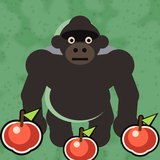 |
Eat the apples in a maze that fills the screen while monsters chase you. You have to keep eating: go too long without an apple and you starve, and being caught costs a life just the same. Now and then a baby gorilla gets lost somewhere far from you, quietly; soon after, a monster starts hunting it. Get there first and you rescue it. Each rescue brings the baby's mother out somewhere else for a few seconds, holding a sword: take it, and for a while the monsters run from you and you can eat them. Bananas turn up for a few seconds too, and a bunch fills you up so you can go far from the apples. A level is passed on how many babies you rescue. | Keeping an eye on the whole maze while your hands and eyes are busy with the part you are in, and noticing something far away early enough to act on it. |
|
| Pickpocket 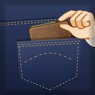 |
A street hustler hides a ball under one of his cups and shuffles them, while people walk past and onlookers watch. Somewhere on the street, someone has their wallet lifted. When the cups stop, everyone freezes: tap the cup with the ball, then the person who was robbed. On later levels you may be asked for the pickpocket instead, and sometimes no one is robbed at all. A round counts only when both answers are right. | Following one thing closely while something else happens at the edge of your vision, and still catching who it happened to. |
|
| Wolves 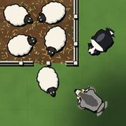 |
You are a sheepdog on a fenced farm. The compound fence falls apart over time and sheep wander out; walking near a frightened sheep sends it back. Wolves turn up too. You have two dogs, and you send each one where it is needed by drawing a path from it. The level is judged on how much of the flock is still inside when the clock runs out. | Staying alert through long quiet stretches, and reacting once something finally happens. |
|
| Pinpoint | You are on a stakeout, watching a square at night in the rain from a rooftop. Lightning lights the square for a moment: a courier with an umbrella stands by the fountain, and at the same instant a lookout in a yellow raincoat, under a see-through umbrella, is seen at one of the eight streets around it. Then it is dark, the street lamps come on, and people with umbrellas queue in every street. You tap the courier's umbrella in the street where the lookout was. The flash gets shorter as you get better and longer when you miss, and later levels add more umbrellas, two-colored ones, and passers-by glimpsed in the same flash. | Taking in two things at once in a glimpse, one in front of you and one to the side. Other spots hold the courier's umbrella too, so remembering only the umbrella puts you at the wrong spot, and remembering only the spot leaves you guessing between umbrellas. |
|
Game categoryMemory & Speed
| Game | What you do | Skills involved | What it measures |
|---|---|---|---|
| Dino 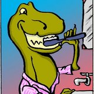 |
One card at a time. Swipe right if you have already seen that card earlier in this round, left if it is new. | How long a picture stays recognizable, and telling "I have seen this" from "this is new". |
|
| Dino N-Back 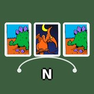 |
One card at a time, and you say whether it matches the card a fixed number of positions back: two back, three back, and so on. | Holding a short running list in mind and updating it with every single card. |
|
| Moving Cards 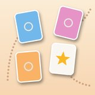 |
Cards are shown face-up for a few seconds, then turn face-down. On most levels they also move around the screen. Click them in the order you memorized. | Keeping an order in mind while the things themselves change places. |
|
| Mosaic 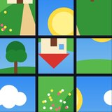 |
A picture is shown for a few seconds, then cut into pieces and shuffled. Drag one piece onto another to swap them until the picture is whole again; on some levels the pieces are rotated too, and a tap rotates a piece. The same picture comes back for several rounds, each time shown again and shuffled again. To pass a level, rebuild the picture in its last round and in enough of the others. | Remembering where every part of a picture was, and getting faster at the same picture each time you see it again. |
|
| Lighthouse | Sail a small boat across a dark sea at night, from the bottom to a pier at the top. A lighthouse in the middle sweeps its beam around, and your boat carries a small light of its own; the rocks and wrecks show only while a light is on them. On later levels other boats cross the sea too, and they show only in the light as well. Draw a route and the boat sails it, or tap where to go. Each round allows a few crashes and has a time limit. On some levels the sea is the same every round, and then each round allows one crash fewer. | Remembering where things are from brief glimpses, and planning a route through them. |
|
Game categoryPlanning
| Game | What you do | Skills involved | What it measures |
|---|---|---|---|
| Taxi | You own a taxi station. Select a taxi, tap a waiting customer, and it drives them to their destination and is paid on arrival. Fuel costs money for every tile driven and every second spent idling, a new taxi costs money, and a taxi that runs dry is gone for the rest of the game. The score is your money, and the game ends if it reaches zero. | Planning several moves ahead while a running cost ticks away underneath. |
|
| Storm 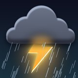 |
A storm is coming through your roof. Walk to each leak and put a container or tape under it, carry full containers to a drain to empty them, and keep the water off the floor. Water that gets through spreads into a growing puddle. A room is lost once too much of its floor is under water (each level tells you how much), and losing a room loses the round. Your belongings are worth different amounts, so some are worth saving first. On the later levels the house has more rooms than fit on the screen: you see the whole house before the storm starts, and an arrow at the edge of the screen points to a new leak out of sight. | Deciding what to deal with first when several things need you at once, and, once the house is bigger than the screen, keeping track of which leak is in which room without being able to see them. |
|
| Valet 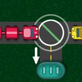 |
Get all the cars to their parking spots without letting them collide. You never drive them. You tap a junction to change its door and send them a different way. The roads can be shown by day, at night or in the rain, or a different one for every round. | Directing several moving things at once without steering any of them. |
|
| Pneumo 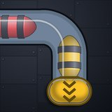 |
Capsules travel through pneumatic tubes and each belongs at one particular receiver. Turn the doors at junctions to route them; a door stays exactly as you left it. Two capsules that touch destroy each other. | Working ahead of the capsules rather than reacting to them. |
|
| Detour 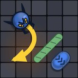 |
Creatures drive themselves toward their own goals and you win by stopping every one of them. You never steer them. You shut doors at junctions to turn them aside, and a shut door swings open again after four seconds. The board is a dungeon or an old courtyard, as you choose, or a different one for every board. | Timing an action so that it lands with the creature rather than before it. |
|
| Ants 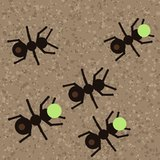 |
A colony is carrying food from a pile back to its nest, along a trail it lays as it goes. Keep the food from getting there. Tap the ground to put something in the way: a stone or a twig to walk around, a pool of water that slowly dries up, bait they will carry off instead, or a glass cover that leaves a pile only one small opening. A spray they avoid and an eraser that wipes their trail are there too. You have only a few of each, so pick things up again and move them as the trail moves. Block the trail and the colony wears a new one around it, so watch where the next one is forming. Every crumb that reaches a nest costs one from your allowance, and every ant you crush costs five; keep some allowance until the clock runs out. Later levels have several nests and piles, rocks of their own on the ground, and a world bigger than the screen. | Reading where a route is forming before it has formed, and spending a few tools where they count. |
|
Game categoryReflexes
| Game | What you do | Skills involved | What it measures |
|---|---|---|---|
| Whack 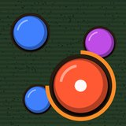 |
A target appears somewhere on screen and you tap it before it goes. Only taps landing inside it count. Some of what appears is a decoy and should be left alone, and some rounds hold nothing but decoys, where touching none of them earns you points. | Reacting quickly, landing accurately, and stopping yourself from hitting something you should not. |
|
| Nudge 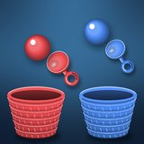 |
Colored balls fall into a walled arena with a basket for each color down the sides. You drag a tool, a disc on a stick, and push each ball up and over the rim so it drops into the basket of its own color. A tool only touches balls of its own color; every other color passes straight through it. | Fine physical control, and the cost of swapping from one tool to another. |
|
| Typit 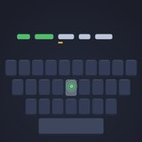 |
Type on a custom on-screen keyboard. For every keypress the game measures exactly where your finger landed, not just which key it hit. | Typing speed and accuracy, and whether your finger keeps landing off-center on particular keys. |
|
Game categoryRecognition
| Game | What you do | Skills involved | What it measures |
|---|---|---|---|
| Couples 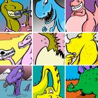 |
A grid of cards in which exactly one image appears twice, every other one being unique. Find the pair and tap both. | Searching in an orderly way, and remembering which cards you have already ruled out. |
|
| Friends | You are shown a small group of friends, a face with a first name under each, and told to remember them. They disappear, then strangers arrive one at a time and for each you answer: is this one of my friends? Say Hi, or Ignore. Each arrival starts tiny and grows to full size over about four seconds; leave it that long and it counts as Ignore. Answering early is worth more. | Recognizing faces you were asked to learn, among people you have never met, before time runs out on each one. |
|
| Weris | Study one person and their name, then find that same face in a grid of others as fast as you can. No names this time, and the grid grows from four faces up to twenty. | How much harder searching gets as the crowd grows. |
|
| Polka Dots 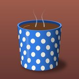 |
A scatter of dots is arranged so that it outlines a letter or a digit. Tap which one it is from the options offered. On some levels the options disappear after a few seconds. | Reading a whole shape from an incomplete pattern. |
|
Game categoryMemory & Navigation
| Game | What you do | Skills involved | What it measures |
|---|---|---|---|
| Mind Palace 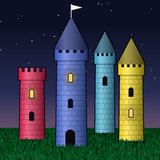 |
Explore a castle and find what is hidden in it, then find it again on the map. Walking through the castle you only ever see the room you are in. Every room, a kitchen, a library, a garden, has a vault with an object inside, a crown, an anchor, a teacup: walk into a vault to open it and see what it holds. When every vault is opened, the castle is shown from above as a plain map, every room the same gray, and for each object you tap the room it was in before its time bar runs out. The bar adapts to you: quick answers shorten it, running out lengthens it. A wrong room or a question run out costs a point. Bombs and monsters in the rooms end the round if they touch you. | Building a map of a place in your head while walking through it, and remembering what was where. |
|
| Lights Out 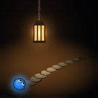 |
A maze of tunnels in a coal mine, or of paths in a garden at night, is shown lit for five seconds. Then the lights go out: the lamps and the markers vanish, the maze dims, and you walk it from memory to your own destination, avoiding the bombs. You choose the mine or the garden, or a different one for every board. | How much of a scene survives five seconds of looking at it. |
|
| Dispatch 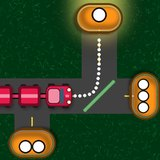 |
A delivery truck drives itself around a maze of roads and you never steer it. What you control is the doors: tap one to rotate it, and a truck passing through is turned ninety degrees. The whole yard stays in view. Docks must be reached in the right order, and passing the wrong one does nothing. The roads can be shown by day, at night or in the rain, or a different one for every round. | Remembering a delivery order and setting the route up in advance rather than reacting. |
|
| Headlights 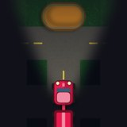 |
The same delivery job, but you steer the truck yourself. The whole board is shown for five seconds first, and that is your only look at it. Then the camera zooms in and follows the truck, so from there the route comes from memory. Docks still have to be reached in order. Like Dispatch, it can be played by day, at night or in the rain. | Finding your way from memory with no overview left to check against. |
|
Appendix A
It stays on your device. Nothing is sent anywhere. There is no account and no server. The app is not connected to anything, and nobody else can see any of it.
It is shown back to you and nothing else is done with it. The app can tell you that a game has been slower than your usual range across the last several sessions. That is a description of your own play, not a finding about your health.
These games are not a medical test and cannot diagnose anything. Plenty of ordinary things move these numbers: a bad night, a noisy room, a new phone, a cold, being in a hurry.
That is why the app is slow to say anything at all. A single unusual session is not remarked on; it takes a run of them, going the same way, before anything is pointed out. If something does look genuinely different to you over months, that is a conversation for a doctor, and these numbers might be a useful thing to bring, not an answer in themselves.